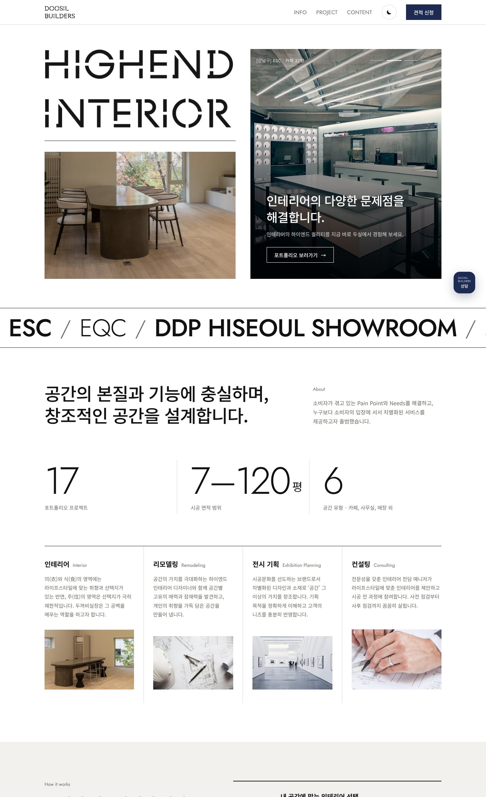
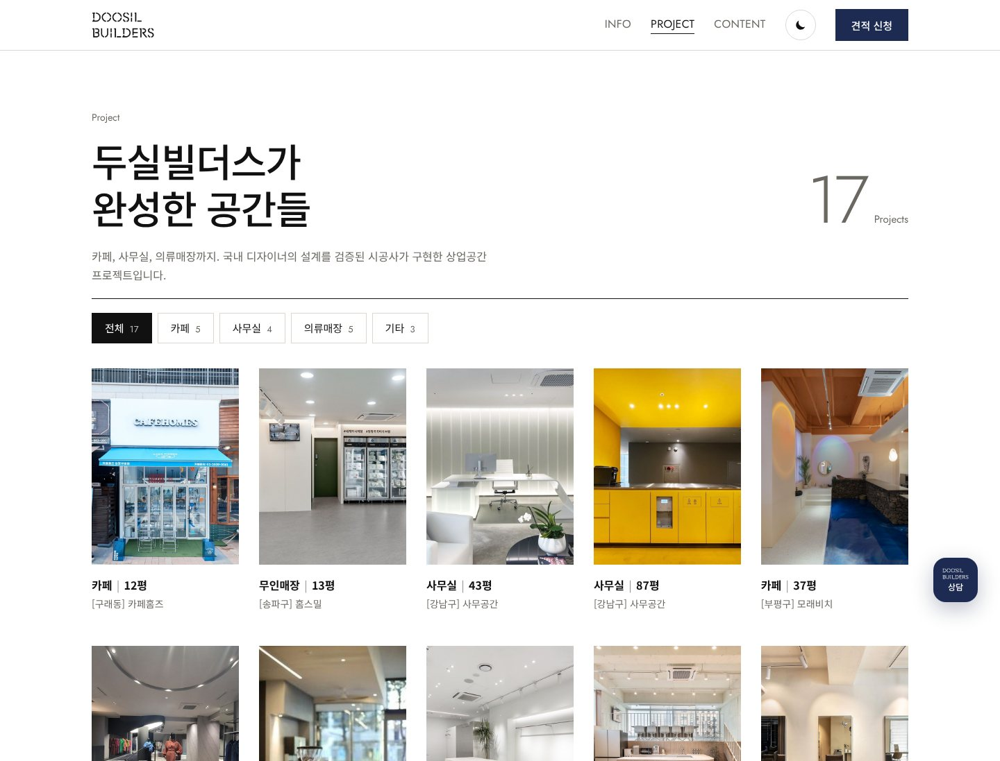
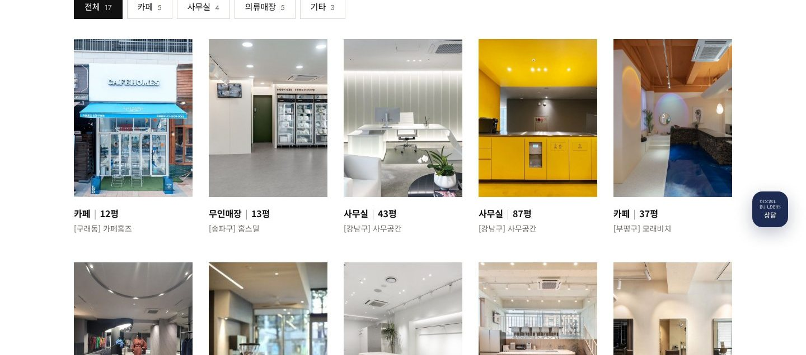
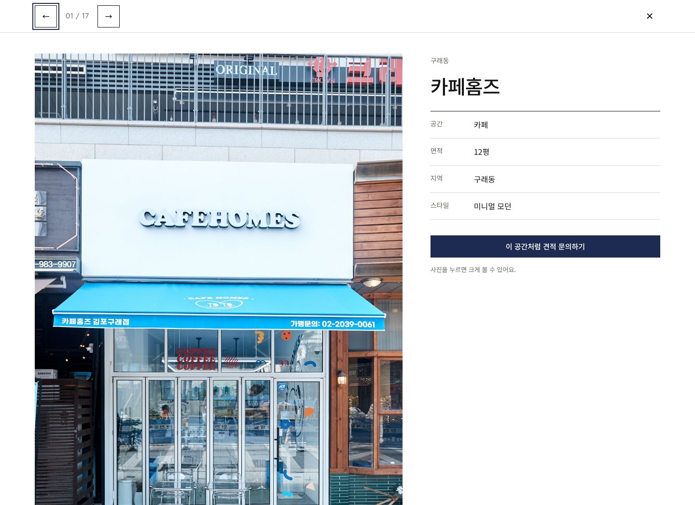
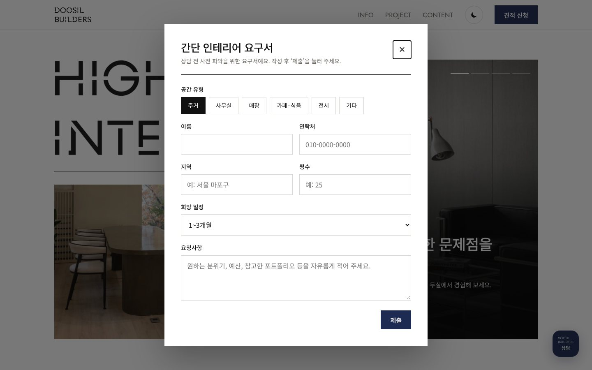
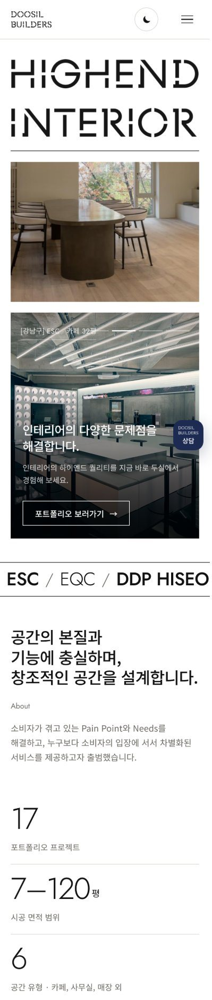

17개 사례를 쌓아두는 대신,
고를 수 있게 만들었습니다
두실빌더스는 카페 · 사무실 · 의류매장 같은 상업공간 인테리어를 중개하는 브랜드입니다. 시공 사례는 17개가 쌓여 있었지만 유형 구분 없이 한 줄로 나열돼 있어, 카페를 찾는 고객도 사무실 · 미용실 사례를 전부 지나쳐야 했습니다. 공간 유형으로 걸러 보고, 조건을 확인하고, 그 화면에서 바로 문의까지 닿는 구조로 정리한 개선안입니다.

사례는 충분했지만,
고객이 자기 공간을 찾을 길이 없었습니다
상업공간 시공은 업종에 따라 필요한 것이 완전히 달라집니다. 카페는 동선과 조명, 의류매장은 진열과 피팅룸, 사무실은 파티션과 회의실이 기준이 됩니다. 그런데 사례 목록은 업종과 무관하게 사진과 이름만 세로로 쌓여 있었습니다.
영업팀 설문과 실제 사례 분포를 확인한 결과 17개 사례는 카페 5 · 의류매장 5 · 사무실 4 · 기타 3으로 고르게 갈려 있었습니다. 한쪽으로 쏠려 있었다면 대표 사례를 앞에 두는 것으로 충분했겠지만, 고르게 갈린다는 건 목록을 줄이는 대신 거르는 수단을 줘야 한다는 뜻이었습니다.

목록이 길어서가 아니라,
고를 수단이 없어서 멈춥니다
17개는 스크롤로 다 볼 수 있는 양입니다. 문제는 분량이 아니라 어디까지가 내 얘기인지 판단할 기준이 화면에 없다는 것이었습니다. 카페 사장이 들어와도 본인과 무관한 사례를 먼저 지나쳐야 했고, 사례를 열어도 면적 · 지역 같은 조건은 본문 속에 흩어져 있어 비교가 되지 않았습니다.
그래서 화면을 예쁘게 다시 그리는 대신, 고객이 밟는 순서를 고르기 → 확인하기 → 묻기 세 단계로 먼저 정의하고 각 단계에서 화면이 책임질 것을 나눴습니다.

필터로 범위를 좁히고,
상세에서 조건부터 확인하게 했습니다
필터는 공간 유형 하나로만 두고, 전체를 포함해 5개로 고정했습니다. 유형을 겹쳐 고를 수 있게 하면 선택지는 늘지만 결과가 흐려지고, 고객이 찾는 공간은 대개 하나이기 때문에 한 번에 하나만 고르는 쪽을 택했습니다.
가격대 · 기간 필터는 넣지 않았습니다. 사례마다 산정 기준이 달라 같은 선 위에 놓고 비교할 수 있는 값이 아니라고 봤습니다. 비교 불가능한 값을 필터로 주면 걸러진 결과를 고객이 신뢰할 수 없게 됩니다.
상세 화면에서는 면적 · 지역 · 스타일을 표로 고정하고 사진을 아래로 내렸습니다. 고객이 먼저 묻는 조건을 본문에서 찾게 두지 않고, 열자마자 같은 자리에서 읽히게 하기 위해서입니다.

전화를 막은 게 아니라,
물을 것을 먼저 받았습니다
모든 화면에 문의 버튼을 고정하고, 누르면 상담 전 요구서가 바로 열리도록 했습니다. 남긴 항목은 공간 유형 · 이름 · 연락처 · 지역 · 평수 · 희망 일정 · 요청사항 7개입니다.
기준은 단순합니다. 상담사가 첫 통화에서 어차피 묻게 되는 것만 남겼습니다. 입력 항목이 늘수록 중간에 그만두기 쉬우므로, 상담 중에 물어도 되는 항목은 폼에서 뺐습니다.
상세 화면에서 문의를 누르면 그 사례의 공간 유형이 미리 선택된 채로 열리도록 설계했습니다. 방금 본 사례와 지금 쓰는 문의가 끊기지 않게 하기 위한 장치입니다.

모바일에서도 같은 순서로 읽히도록,
같은 규칙을 그대로 옮겼습니다
모바일에서는 필터를 상단 가로 스크롤로 내리고 스펙표를 2열로 접되, 고르기 → 확인하기 → 묻기 순서는 그대로 유지했습니다. 화면이 좁아진다고 순서가 바뀌면 고객이 다시 길을 잃기 때문입니다. 다크모드는 대비를 다시 잡아 같은 규칙으로 대응했습니다.
한계 — 이 프로젝트는 개선안 단계이고 실제 운영 지표는 없습니다. 17개라는 숫자도 설계 시점의 사례 수이며, 실제 고객이 어떤 유형을 더 많이 찾는지, 요구서를 끝까지 작성하는지, 어느 항목에서 멈추는지는 확인하지 못했습니다.
검증한다면 — 유형별 필터 사용 비율과 요구서 항목별 이탈 지점을 먼저 보겠습니다. 필터가 거의 쓰이지 않는다면 분류 기준 자체가 고객의 언어가 아니라는 뜻이고, 특정 항목에서 멈춘다면 그 항목은 상담 중으로 옮기면 됩니다. 어떤 수를 보면 이 설계가 틀렸다고 말할 수 있는지까지 함께 정해두는 것을 이 작업의 다음 단계로 잡고 있습니다.
- UX · UI Design
- Eukee Kang (본인)
- Scope
- 정보구조 · 화면 전체
- Status
- 개선안 — 미운영